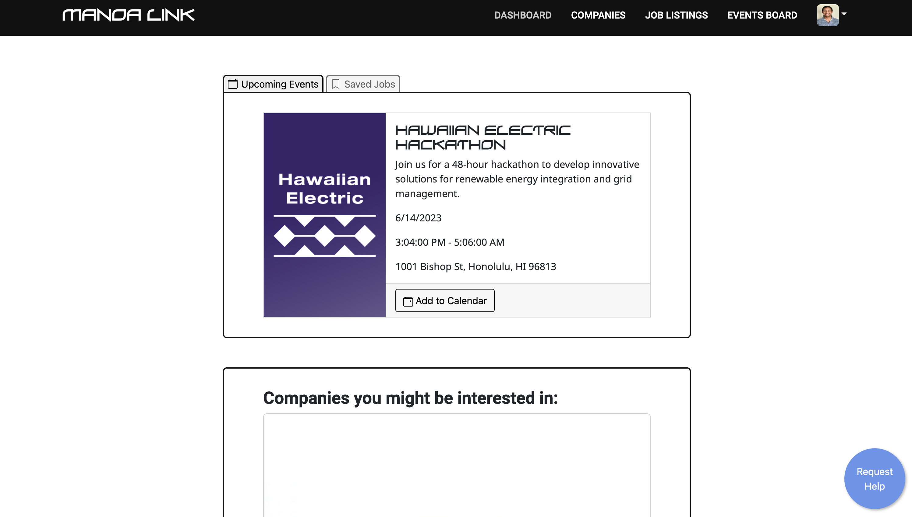
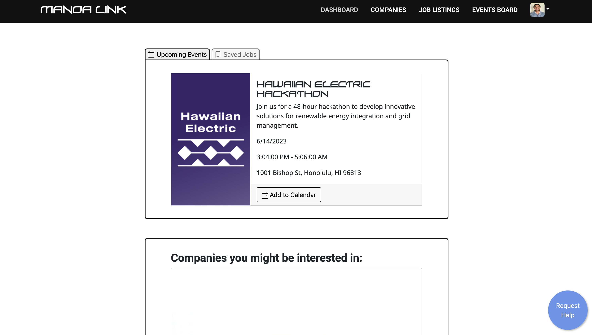

App - Manoa Link
Overview
For my final project in ICS 314: Software Engineering One, I worked in a team of four to develop Manoa Link, an app whose purpose is to connect companies to university students directly by posting job openings, internships, and other opportunities. Businesses can create a user profile and post their job listings on a page where students can view and save the ones they’re interested in. Companies also have the option of adding upcoming events to their profiles, which will become visible to students when they follow companies or add jobs to their dashboard.
My Experience
My first contribution was our cool Manoa Link logo, which can be found on our application, and project page. My other contributions were both on development of the site itself, and managing the workflow/timekeeping of our project. I pitched my ideas for what the project could look like, and together, we refined them into our apps main features, giving the project its shape. My main job was to work on the student’s user functionality. The student has a dashboard page, and a page where job listings are posted. We used a lot of what we learned from our other projects and applied it to our project, including the React card presets for our job listings. I worked mostly on backend development with the Mongo database, and added the student’s ability to save jobs on the main listings page, so it can be viewed in their dashboard. This required accessing the Mongo database’s user collections to fetch and write data. I also contributed small amounts of front-end development by fixing up some of the UI of the landing and job listings page.
One of the main takeaways from this experience for me was that I learned to be a lot more realistic with my time estimations. I definitely thought that we would complete this project much faster than we actually did, but along the way, we managed to find a schedule that worked fairly well for all of us. This was also an amazing learning experience for group development. Learning to communicate was one of the most crucial elements of this project for me. We did run into some miscommunications issues once or twice that resulted in a portion of our work being lost, but we continued to refine our communication strategy until we worked like a well oiled machine. The last thing I would say was very valuable to me, is the experience of building a working web application. I’ve participated in hackathons before, but was never required to host my projects on a working domain. This was an extremely cool and satisfying experience for me that will help shape my future work.
Our Manoa Link project page can be found here.
 
